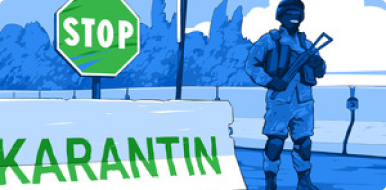

Мирзиёев рассказал, зачем было построено Сардобинско водохранилище 05:28 / 16.05.2020
Мирзиёев рассказал, зачем было построено Сардобинско водохранилище 05:28 / 16.05.2020 Карантин в Узбекистане продлен до 1 июня Карантин в Узбекистане продлен до 1 июня05:28 / 16.05.2020
Карантин в Узбекистане продлен до 1 июня Карантин в Узбекистане продлен до 1 июня05:28 / 16.05.2020 Обмелевшая Сардоба: стихия или
человеческий фактор? 05:28 / 16.05.2020
Обмелевшая Сардоба: стихия или
человеческий фактор? 05:28 / 16.05.2020 Следствие проверяет четыре версии
прорыва Сардобинской плотины 05:28 / 16.05.2020
Следствие проверяет четыре версии
прорыва Сардобинской плотины 05:28 / 16.05.2020 Выявлено еще 7 случаев коронавируса Выявлено еще 7 случаев коронавируса05:28 / 16.05.2020
Выявлено еще 7 случаев коронавируса Выявлено еще 7 случаев коронавируса05:28 / 16.05.2020- Итоги второго месяца карантина Итоги второго месяца карантина05:28 / 16.05.2020

По факту прорыва Сардобинского водохранилища возбуждено уголовное дело После прорыва дамбы Сардобинского водохранилища возбуждено уголовное дело, сообщили в пресс-службе Генпрокуратуры Узбекистана.

Мирзиёев: «Нам следовало бы принять некоторые правила карантина как часть повседневной жизни» Президент Узбекистана заявил, что после того, как угроза коронавируса исчезнет, в стране следовало бы принять некоторые правила периода карантина как часть своей повседневной жизни.

В Ташкенте планируют ввести новую систему электронных проездных билетов Целью этих изменений является максимально возможное сокращение количества других маршрутов на улицах, где проходят основные маршруты.

По факту прорыва Сардобинского водохранилища возбуждено уголовное дело После прорыва дамбы Сардобинского водохранилища возбуждено уголовное дело, сообщили в пресс-службе Генпрокуратуры Узбекистана.

Мирзиёев: «Нам следовало бы принять некоторые правила карантина как часть повседневной жизни» Президент Узбекистана заявил, что после того, как угроза коронавируса исчезнет, в стране следовало бы принять некоторые правила периода карантина как часть своей повседневной жизни.

В Ташкенте планируют ввести новую систему электронных проездных билетов Целью этих изменений является максимально возможное сокращение количества других маршрутов на улицах, где проходят основные маршруты.